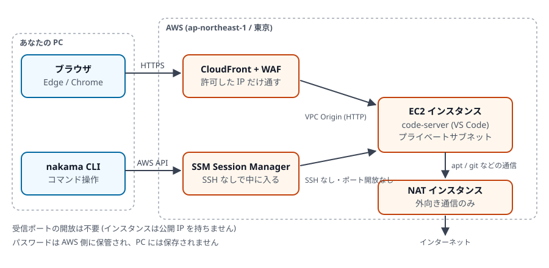
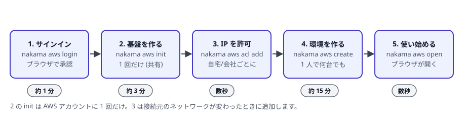

nakama チュートリアル
AWS 上に「ブラウザだけで使える開発環境」を数コマンドで作る道具、nakama の使い方を一から説明します。Windows や証明書のしくみに詳しくなくても読み進められるように書いています。
nakama で何ができるのか
手元のパソコンのメモリが足りず、開発ツールが重くて動かない。そんなときに、開発環境そのものを AWS (クラウド) 側に置いてしまうのが nakama です。
- ブラウザで VS Code が開きます。 クラウド上で動く VS Code (code-server) に、ブラウザからアクセスします。手元に開発ツールを入れる必要はありません
- 手元の VS Code からも使えます。 デスクトップ版の VS Code や JetBrains、素の
sshからも接続できます - 止めればお金がほとんどかかりません。 使っていないときは停止でき、停止中に残るのはディスクの保管料と WAF の基本料金だけです (第 3 章)
- aws コマンドのインストールは不要です。 サインインもリソース操作も nakama だけで完結します
- 会社のネットワーク (プロキシ) にそのまま対応します。 面倒な証明書の設定は nakama が肩代わりします

このチュートリアルの読み方
最初から順に読めば、初回のセットアップから日々の運用までひととおり分かります。急いでいる場合は次の順で読んでください。

- 第 1 章インストールとサインインnakama を Windows に入れて、AWS にサインインします。複数の AWS アカウントの切り替えも扱います。
- 第 2 章会社のプロキシと証明書「証明書エラー」がなぜ起きるのかを図で説明し、
nakama aws cli shellの使い方を示します。 - 第 3 章土台を用意するネットワークなどの共通部分を作り、自分の接続元 IP を許可します。料金の考え方もここで。
- 第 4 章開発環境を作るインスタンスの作成、大きさの選び方、初期セットアップの自動化、軽量版 (
--bare) の使い分け。 - 第 5 章開発環境を使うブラウザ / ターミナル / 手元の VS Code / ポート転送、4 つのアクセス方法を使い分けます。
- 第 6 章日々の運用起動と停止、バックアップと復元、アップデート、サイズ変更、削除。
- 第 7 章困ったときは
nakama aws doctorの読み方と、症状別の対処一覧。 - 第 8 章コマンド早見表全コマンドとオプション、環境変数、設定ファイルの置き場所。
始める前に用意するもの
| もの | 説明 |
|---|---|
| AWS アカウント | 会社のものでも個人のものでも構いません。リージョン (地域) は東京 ap-northeast-1 に固定されています |
| ブラウザで AWS にログインできること | nakama のサインインは、ブラウザで開いた AWS のログイン画面を使います |
| IAM の権限 | ログインには AWS の管理ポリシー SignInLocalDevelopmentAccess が必要です。リソースを作るには EC2 や CloudFront などの権限も必要です (第 7 章で自分の権限を確認できます) |
| パソコン | Windows / macOS / Linux。このチュートリアルの画面例は Windows の PowerShell です |
料金について
nakama は AWS のリソース (仮想サーバーやディスク) を作ります。使った分だけ AWS から課金されます。具体的な金額は地域や構成で変わるため、AWS 料金計算ツールや AWS のコンソールで確認してください。このチュートリアルでは金額そのものは扱いませんが、第 3 章で「どこにお金がかかるか」と「止めれば減る仕組み」を説明します。
用語ミニ辞典
本文で出てくる言葉です。分からない言葉が出てきたらここに戻ってきてください。
- CLI (コマンドラインインターフェース)
- 文字を打ってソフトを操作する方式のこと。nakama は CLI の道具で、Windows では PowerShell などの黒い (または青い) 画面で使います。
- 環境変数
- プログラムに設定を渡すための「名前と値」の組。PowerShell では
$env:名前 = "値"と打つと、そのウィンドウの中だけで設定され、閉じれば消えます。 - PATH
- 環境変数の 1 つで、「コマンド名だけで実行できるフォルダー」の一覧。ここに登録すると、どの場所からでも
nakamaと打つだけで実行できます。 - IP アドレス / グローバル IP
- インターネット上の住所にあたる番号。自宅や会社の回線ごとに、外から見える番号 (グローバル IP) が割り当てられます。nakama では「この番号からのアクセスだけ許可する」という使い方をします。
- ポート
- 1 台のサーバーの中でサービスを区別する番号。Web は 80 や 443、開発用サーバーは 3000 や 8080 がよく使われます。
- IAM
- AWS の利用者と権限を管理する仕組み。ユーザーは人、ロールはサーバーやプログラムに貸し出す権限の束です。
- EC2 インスタンス
- AWS が貸してくれる仮想サーバー 1 台のこと。nakama はこの上に開発環境を作ります。「インスタンス」は「サーバー 1 台」と読み替えて構いません。
- code-server
- ブラウザの中で動く VS Code。見た目も操作も、普段の VS Code とほぼ同じです。
- CloudFront
- AWS の配信サービス。ここではインターネットから開発環境へ入るための正面玄関として使います。
- WAF / IP 許可リスト (ACL)
- 正面玄関の門番。あらかじめ登録した IP アドレス以外からのアクセスを拒否します。自宅や会社の回線ごとに登録します。
- SSM Session Manager
- AWS が用意する裏口のような仕組み。サーバー側にポートを開けなくても、AWS の権限だけで中に入れます。nakama の
connect/ssh/tunnelはこれを使います。 - NAT インスタンス
- 開発環境から外向きの通信 (ソフトのダウンロードなど) を中継する小さなサーバー。nakama は開発環境の稼働に合わせて自動で起動・停止します。
- プロキシ
- 会社のネットワークで、外部との通信をいったん受け止めて代理で通す装置。多くの会社では、これを通らないと外に出られません。
- 証明書 / CA (認証局)
- 「この通信相手は本物です」を証明する電子的な身分証が証明書で、それを発行する組織が CA です。詳しくは第 2 章で図を使って説明します。
- SSH
- 遠くのサーバーに安全にログインするための定番の仕組み。デスクトップ版 VS Code のリモート接続もこれを使います。
- ポート転送 (トンネル)
- クラウド側で動いているサービス (開発用サーバーなど) を、手元の
localhostのように扱えるようにすること。nakama aws tunnelが担当します。 - バックアップ / スナップショット
- ある時点のディスクの内容をまるごと控えておくこと。nakama では
backupで作り、restoreで戻します。
画面例の読み方
入力するコマンドは次のように示します。プロンプト (PS C:\> など) は省いているので、そのままコピーできます。
PowerShell で実行
nakama versionコマンドの実行結果は、点線の枠で示します。
0.17.0 (6c34716, 2026-09-03T17:35:42Z)